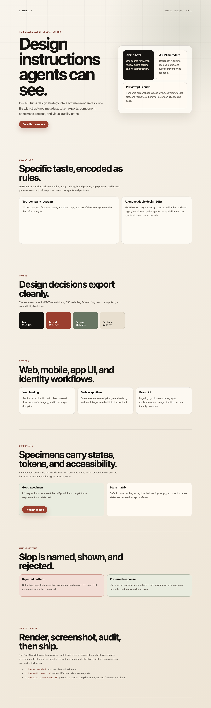
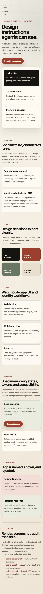
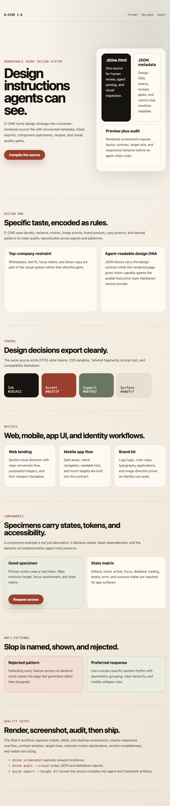

Renderable source
Design examples, specimens, states, anti-patterns, taste declarations, and proof images appear directly in the browser.
Renderable AI design system
D-ZINE turns design direction into a browser-rendered source artifact: visual rules, JSON metadata, tokens, recipes, component specimens, anti-patterns, screenshots, and audits in one framework.


This site is generated from D-ZINE page sources, not hand-maintained as one monolithic page.
The format
D-ZINE is the bridge between design taste and agent implementation. A source page renders visually, carries JSON metadata, exports tokens, compiles prompts, and can be audited with screenshots.
Design examples, specimens, states, anti-patterns, taste declarations, and proof images appear directly in the browser.
A config file points to page sources, brand identity, taste profiles, generated routes, and route-level audits.
Prompts, tokens, CSS variables, Tailwind fragments, goals, compatibility docs, taste reports, and screenshots.
Design tokens
The page defines role-based tokens for color, spacing, radius, and system states. Agents can parse them while reviewers see the visual language in context.
Workflow
D-ZINE now works as a site system: `dzine.config.json`, page-level `.dzine.html` files, brand identity, taste profiles, generated routes, and route-by-route visual audit.
Bind pages to `dzine-launch`, source-backed contracts, brand identity, and route metadata.
Read the rendered source, JSON metadata, specimens, taste profile, and proof surfaces before coding.
Build static routes, shared theme, GitHub pill, docs, taste page, framework page, and showcase.
Run technical and taste audits so generic output fails before release.
Component specimens
Specimens declare platform, tokens, states, accessibility requirements, and anti-patterns. Agents get a bounded target instead of vague taste advice.
Minimum 48px target, semantic accent token, visible focus, and reduced-motion-safe feedback.
<template data-dzine-component="primary-action" data-platform="web" data-tokens="color.accent.primary,radius.control" data-states="default,hover,active,focus,disabled,loading">
Anti-slop
D-ZINE rejects generic visual habits and asks for reusable design logic: role-based tokens, real hierarchy, complete states, responsive proof, and meaningful product context.
Repeated equal feature cards, filler labels, fake metrics, and decorative complexity that cannot become a design system.
Section rhythm, visual evidence, stateful components, accessible motion, and audits that expose problems before release.
Dogfooded proof
The site is built from page-level D-ZINE source artifacts. The CLI generates routes, exports source artifacts, screenshots pages, and audits the rendered website.

Generated routes: home, docs, taste, framework, and showcase.
The CLI audits pages against source-backed D-ZINE launch contracts.
The website is governed by `dzine/brand/identity.json` and `dzine-launch`.
Run it
Build the website from the repo-level D-ZINE project config, then audit the generated routes.
pnpm build node dist/cli/index.js site build --config dzine.config.json --out website node dist/cli/index.js site audit --config dzine.config.json --out reports/website/site-audit --port 6200